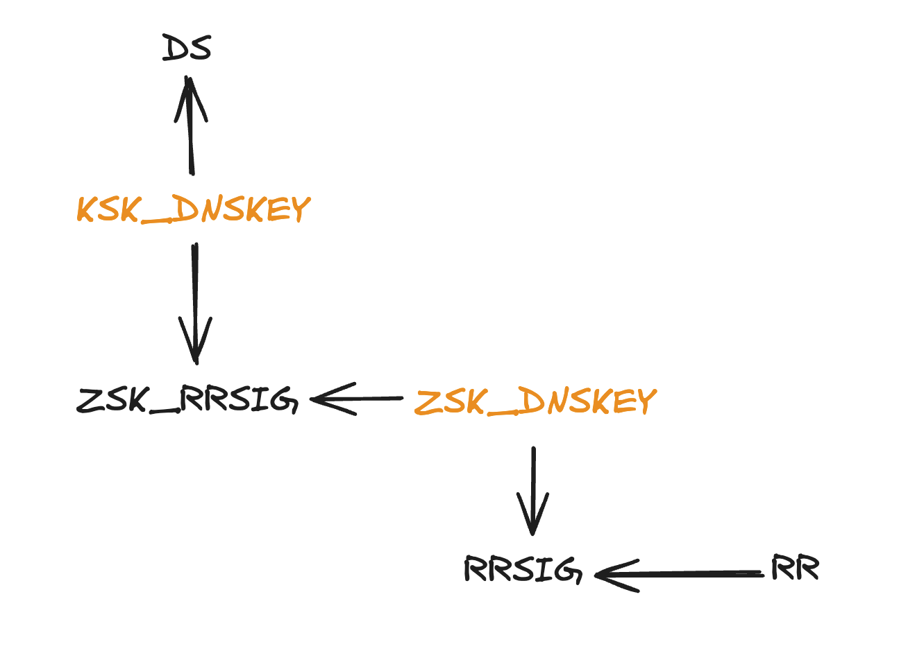

<!DOCTYPE html>
<html><head><title>DNS Security Extension, DNSSEC (DNS)</title><meta charSet="utf-8"/><meta name="viewport" content="width=device-width, initial-scale=1.0"/><meta property="og:title" content="DNS Security Extension, DNSSEC (DNS)"/><meta property="og:description" content="참고한 것들 서울대 권태경 교수님 컴퓨터네트워크보안특강 강의 (Spring 2024) 구름과자 RFC4034 RFC4035 소개 § DNS 에서 resolver 의 작동 과정을 보면 authentication 에 대한 고려가 전혀 없다는 것을 알 수 있다. 즉, resolver 입장에서는 응답받은 record 의 진품여부를 확인할 수가 없는 것."/><meta property="og:image" content="https://mdg.haeramk.im/static/og-image.png"/><meta property="og:width" content="1200"/><meta property="og:height" content="675"/><link rel="icon" href="../../../../static/icon.png"/><meta name="description" content="참고한 것들 서울대 권태경 교수님 컴퓨터네트워크보안특강 강의 (Spring 2024) 구름과자 RFC4034 RFC4035 소개 § DNS 에서 resolver 의 작동 과정을 보면 authentication 에 대한 고려가 전혀 없다는 것을 알 수 있다. 즉, resolver 입장에서는 응답받은 record 의 진품여부를 확인할 수가 없는 것."/><meta name="generator" content="Quartz"/><link rel="preconnect" href="https://fonts.googleapis.com"/><link rel="preconnect" href="https://fonts.gstatic.com"/><link href="../../../../index.css" rel="stylesheet" type="text/css" spa-preserve/><link href="https://cdn.jsdelivr.net/npm/katex@0.16.0/dist/katex.min.css" rel="stylesheet" type="text/css" spa-preserve/><link href="https://fonts.googleapis.com/css2?family=IBM Plex Mono&amp;family=Gowun Batang:wght@400;700&amp;family=Gowun Dodum:ital,wght@0,400;0,600;1,400;1,600&amp;display=swap" rel="stylesheet" type="text/css" spa-preserve/><script src="../../../../prescript.js" type="application/javascript" spa-preserve></script><script type="application/javascript" spa-preserve>const fetchData = fetch(`../../../../static/contentIndex.json`).then(data => data.json())</script></head><body data-slug="gardens/network/dns/terms/DNS-Security-Extension,-DNSSEC-(DNS)"><div id="quartz-root" class="page"><div id="quartz-body"><div class="left sidebar"><h1 class="page-title "><a href="../../../..">Madison Digital Garden</a></h1><div class="spacer mobile-only"></div><div class="search "><div id="search-icon"><p>Search</p><div></div><svg tabIndex="0" aria-labelledby="title desc" role="img" xmlns="http://www.w3.org/2000/svg" viewBox="0 0 19.9 19.7"><title id="title">Search</title><desc id="desc">Search</desc><g class="search-path" fill="none"><path stroke-linecap="square" d="M18.5 18.3l-5.4-5.4"></path><circle cx="8" cy="8" r="7"></circle></g></svg></div><div id="search-container"><div id="search-space"><input autocomplete="off" id="search-bar" name="search" type="text" aria-label="Search for something" placeholder="Search for something"/><div id="results-container"></div></div></div></div><div class="darkmode "><input class="toggle" id="darkmode-toggle" type="checkbox" tabIndex="-1"/><label id="toggle-label-light" for="darkmode-toggle" tabIndex="-1"><svg xmlns="http://www.w3.org/2000/svg" xmlnsXlink="http://www.w3.org/1999/xlink" version="1.1" id="dayIcon" x="0px" y="0px" viewBox="0 0 35 35" style="enable-background:new 0 0 35 35;" xmlSpace="preserve"><title>Light mode</title><path d="M6,17.5C6,16.672,5.328,16,4.5,16h-3C0.672,16,0,16.672,0,17.5    S0.672,19,1.5,19h3C5.328,19,6,18.328,6,17.5z M7.5,26c-0.414,0-0.789,0.168-1.061,0.439l-2,2C4.168,28.711,4,29.086,4,29.5    C4,30.328,4.671,31,5.5,31c0.414,0,0.789-0.168,1.06-0.44l2-2C8.832,28.289,9,27.914,9,27.5C9,26.672,8.329,26,7.5,26z M17.5,6    C18.329,6,19,5.328,19,4.5v-3C19,0.672,18.329,0,17.5,0S16,0.672,16,1.5v3C16,5.328,16.671,6,17.5,6z M27.5,9    c0.414,0,0.789-0.168,1.06-0.439l2-2C30.832,6.289,31,5.914,31,5.5C31,4.672,30.329,4,29.5,4c-0.414,0-0.789,0.168-1.061,0.44    l-2,2C26.168,6.711,26,7.086,26,7.5C26,8.328,26.671,9,27.5,9z M6.439,8.561C6.711,8.832,7.086,9,7.5,9C8.328,9,9,8.328,9,7.5    c0-0.414-0.168-0.789-0.439-1.061l-2-2C6.289,4.168,5.914,4,5.5,4C4.672,4,4,4.672,4,5.5c0,0.414,0.168,0.789,0.439,1.06    L6.439,8.561z M33.5,16h-3c-0.828,0-1.5,0.672-1.5,1.5s0.672,1.5,1.5,1.5h3c0.828,0,1.5-0.672,1.5-1.5S34.328,16,33.5,16z     M28.561,26.439C28.289,26.168,27.914,26,27.5,26c-0.828,0-1.5,0.672-1.5,1.5c0,0.414,0.168,0.789,0.439,1.06l2,2    C28.711,30.832,29.086,31,29.5,31c0.828,0,1.5-0.672,1.5-1.5c0-0.414-0.168-0.789-0.439-1.061L28.561,26.439z M17.5,29    c-0.829,0-1.5,0.672-1.5,1.5v3c0,0.828,0.671,1.5,1.5,1.5s1.5-0.672,1.5-1.5v-3C19,29.672,18.329,29,17.5,29z M17.5,7    C11.71,7,7,11.71,7,17.5S11.71,28,17.5,28S28,23.29,28,17.5S23.29,7,17.5,7z M17.5,25c-4.136,0-7.5-3.364-7.5-7.5    c0-4.136,3.364-7.5,7.5-7.5c4.136,0,7.5,3.364,7.5,7.5C25,21.636,21.636,25,17.5,25z"></path></svg></label><label id="toggle-label-dark" for="darkmode-toggle" tabIndex="-1"><svg xmlns="http://www.w3.org/2000/svg" xmlnsXlink="http://www.w3.org/1999/xlink" version="1.1" id="nightIcon" x="0px" y="0px" viewBox="0 0 100 100" style="enable-background='new 0 0 100 100'" xmlSpace="preserve"><title>Dark mode</title><path d="M96.76,66.458c-0.853-0.852-2.15-1.064-3.23-0.534c-6.063,2.991-12.858,4.571-19.655,4.571  C62.022,70.495,50.88,65.88,42.5,57.5C29.043,44.043,25.658,23.536,34.076,6.47c0.532-1.08,0.318-2.379-0.534-3.23  c-0.851-0.852-2.15-1.064-3.23-0.534c-4.918,2.427-9.375,5.619-13.246,9.491c-9.447,9.447-14.65,22.008-14.65,35.369  c0,13.36,5.203,25.921,14.65,35.368s22.008,14.65,35.368,14.65c13.361,0,25.921-5.203,35.369-14.65  c3.872-3.871,7.064-8.328,9.491-13.246C97.826,68.608,97.611,67.309,96.76,66.458z"></path></svg></label></div></div><div class="center"><div class="page-header"><div class="popover-hint"><h1 class="article-title ">DNS Security Extension, DNSSEC (DNS)</h1><p class="content-meta ">May 27, 2024, 10 min read</p><ul class="tags "><li><a href="../../../../tags/terms" class="internal tag-link">#terms</a></li><li><a href="../../../../tags/network" class="internal tag-link">#network</a></li><li><a href="../../../../tags/dns" class="internal tag-link">#dns</a></li></ul></div></div><article class="popover-hint"><blockquote class="callout is-collapsible is-collapsed" data-callout="info" data-callout-fold>
<div class="callout-title">
                  <div class="callout-icon"><svg xmlns="http://www.w3.org/2000/svg" width="100%" height="100%" viewBox="0 0 24 24" fill="none" stroke="currentColor" stroke-width="2" stroke-linecap="round" stroke-linejoin="round"><circle cx="12" cy="12" r="10"></circle><line x1="12" y1="16" x2="12" y2="12"></line><line x1="12" y1="8" x2="12.01" y2="8"></line></svg></div>
                  <div class="callout-title-inner"><p>참고한 것들 </p></div>
                  <svg xmlns="http://www.w3.org/2000/svg" width="24" height="24" viewBox="0 0 24 24" fill="none" stroke="currentColor" stroke-width="2" stroke-linecap="round" stroke-linejoin="round" class="fold">
                  <polyline points="6 9 12 15 18 9"></polyline>
                </svg>
                </div>
<ul>
<li><a href="../../../../8.-DNSSEC" class="internal" data-slug="8.-DNSSEC">서울대 권태경 교수님 컴퓨터네트워크보안특강 강의 (Spring 2024)</a></li>
<li><a href="https://www.cloudflare.com/dns/dnssec/how-dnssec-works/" class="external">구름과자</a></li>
<li><a href="https://datatracker.ietf.org/doc/html/rfc4034" class="external">RFC4034</a></li>
<li><a href="https://datatracker.ietf.org/doc/html/rfc4035" class="external">RFC4035</a></li>
</ul>
</blockquote>
<h2 id="소개">소개<a aria-hidden="true" tabindex="-1" href="#소개" class="internal"> §</a></h2>
<ul>
<li><a href="../../../../gardens/network/dns/Domain-Name-System-(DNS)" class="internal" data-slug="gardens/network/dns/Domain-Name-System-(DNS)">DNS</a> 에서 <a href="../../../../gardens/network/dns/terms/Resolver-(DNS)" class="internal" data-slug="gardens/network/dns/terms/Resolver-(DNS)">resolver</a> 의 작동 과정을 보면 authentication 에 대한 고려가 전혀 없다는 것을 알 수 있다.
<ul>
<li>즉, resolver 입장에서는 응답받은 <a href="../../../../gardens/network/dns/terms/Resource-Record,-RR-(DNS)" class="internal" data-slug="gardens/network/dns/terms/Resource-Record,-RR-(DNS)">record</a> 의 진품여부를 확인할 수가 없는 것.</li>
<li>따라서 이러한 점을 노려 공격하는 것이 <a href="../../../../gardens/network/dns/terms/Cache-Poisoning,-Spoofing-(DNS)" class="internal" data-slug="gardens/network/dns/terms/Cache-Poisoning,-Spoofing-(DNS)">DNS cache poisoning</a> 인 것이다.</li>
</ul>
</li>
<li>그래서 record 의 진품여부를 <a href="../../../../gardens/cybersecurity/PKIX/Public-Key-Infrastructure-X509,-PKIX-(PKIX)" class="internal" data-slug="gardens/cybersecurity/PKIX/Public-Key-Infrastructure-X509,-PKIX-(PKIX)">PKI</a> 로 제공하고자 하는 것이 <em>DNS Security Extension</em> (<em>DNSSEC</em>) 이다.
<ul>
<li><em>Integrity</em>: <a href="../../../../gardens/network/dns/terms/Nameserver-(DNS)" class="internal" data-slug="gardens/network/dns/terms/Nameserver-(DNS)">nameserver</a> 가 보낸 record 가 중간에 변경되지 않음</li>
<li><em>Authentication</em>: nameserver 에 대한 신원 인증</li>
</ul>
</li>
</ul>
<h2 id="서명-생성-절차">서명 생성 절차<a aria-hidden="true" tabindex="-1" href="#서명-생성-절차" class="internal"> §</a></h2>
<ul>
<li>어떤 nameserver 가 다음과 같은 record 들을 가지고 있었다고 해보자.</li>
</ul>
<pre><code>A{example.com, 1.2.3.4}
A{example.com, 5.6.7.8}
</code></pre>
<ul>
<li>일단 nameserver 는 비대칭키 쌍을 하나 생성하고, 그 중 공개키를 <code>DNSKEY</code> 라는 record type 으로 record 에 추가한다.
<ul>
<li>이 비대칭키는 record 들을 서명하고 검증하는데 사용할 것이므로 <em>Zone Signing Key</em> (<em>ZSK</em>) 라고 부른다.</li>
</ul>
</li>
</ul>
<pre><code>A{example.com, 1.2.3.4}
A{example.com, 5.6.7.8}
DNSKEY{zsk_pubkey}
</code></pre>
<ul>
<li>그리고 nameserver 이 비대칭키 쌍 중 개인키로 자신이 가지고 있는 모든 record 들을 서명하여 <code>RRSIG</code> 라는 record type 으로 record 에 추가한다.
<ul>
<li>다만 이 개인키로는 <code>DNSKEY</code> record 는 서명하지 않는다.</li>
<li>같은 domain 과 record type 을 가지는 record 는 여러개일 수 있는데, 이들을 <em>RRSet</em> (<em>Resource Record Set</em>) 라고 부른다.
<ul>
<li>가령 <code>example.com</code> 에 대해서 여러 IP 를 <code>A</code> record 들로 가지는 등</li>
</ul>
</li>
<li>그리고 이 RRSet 당 하나의 <code>RRSIG</code> record 를 생성하게 된다.
<ul>
<li>구체적으로는 metadata (<code>RRSIG</code> 의 RDATA 에서 signature 만 뺀 부분) 와 RRSet 의 모든 RR 들을 합친다음 서명하는 식으로 생성한다.</li>
</ul>
</li>
</ul>
</li>
</ul>
<pre><code>zsk_sign := sign(
  zsk_priv, 
  {RRSIG_RDATA, A{example.com, 1.2.3.4}, A{example.com, 5.6.7.8}}
)
</code></pre>
<pre><code>A{example.com, 1.2.3.4}
A{example.com, 5.6.7.8}
DNSKEY{zsk_pubkey}
RRSIG{zsk_sign}
</code></pre>
<ul>
<li><code>DNSKEY</code> record 에 대해서는, 비대칭키를 하나 더 생성하여 서명해 <code>RRSIG</code> record 를 생성한다 <sup><a href="#user-content-fn-rrsig-payload" id="user-content-fnref-rrsig-payload" data-footnote-ref aria-describedby="footnote-label" class="internal">1</a></sup>.
<ul>
<li>이 비대칭키는 위에서 생성한 키를 서명하는 데에 사용되었으므로, <em>Key Signing Key</em> (<em>KSK</em>) 라고 부른다.</li>
<li>이 비대칭키에 대한 공개키도 <code>DNSKEY</code> record 로 추가한다.</li>
</ul>
</li>
</ul>
<pre><code>A{example.com, 1.2.3.4}
A{example.com, 5.6.7.8}
DNSKEY{zsk_pubkey}
RRSIG{zsk_sign}
DNSKEY{ksk_pubkey}
RRSIG{ksk_sign}
</code></pre>
<ul>
<li>그리고 마지막으로, KSK <code>DNSKEY</code> record 를 hash 해 해당 nameserver 의 상위 zone 으로 보내고, 상위 zone 에서는 이것을 받아 <code>DS</code> (Delegation Signer) record type 으로 저장한다.
<ul>
<li>이렇게 ZSK 와 KSK 두개를 사용하는 이유는 record sign 에 사용되는 key 를 상위 zone 과 분리하기 위함이다.</li>
<li>만일 ZSK 를 <code>DS</code> record 로 만들어 상위 zone 으로 올려보낸다면, 이 key 를 rotation 하면 상위 zone 의 <code>DS</code> record 도 변경해야 하고, 이 <code>DS</code> record 에 대한 <code>RRSIG</code> 도 변경해야 하기 때문에 관리의 복잡성이 늘어난다.</li>
<li>하지만 상위 zone 과 분리하면 이 key 를 자주 rotation 할 수 있기 때문에, 보안 수준이 더욱 높아지게 되는 것.</li>
</ul>
</li>
</ul>
<pre><code>parent:
DS{ksk_hash}

child:
A{example.com, 1.2.3.4}
A{example.com, 5.6.7.8}
DNSKEY{zsk_pubkey}
RRSIG{zsk_sign}
DNSKEY{ksk_pubkey}
RRSIG{ksk_sign}
</code></pre>
<ul>
<li>이와 같은 과정이 상위 zone 에서도 연쇄적으로 일어나, 결과적으로 다음과 같은 형상을 띄게 된다.</li>
</ul>
<p></p>
<blockquote>
<p>출처: 서울대 컴공 권태경교수님 수업 자료</p>
</blockquote>
<h3 id="정리">정리<a aria-hidden="true" tabindex="-1" href="#정리" class="internal"> §</a></h3>
<ul>
<li>요약하면, DNSSEC 에서는 다음과 같은 record type 이 추가된다.</li>
</ul>


<table><thead><tr><th>TYPE NAME</th><th>FULL NAME</th><th>DESCRIPTION</th></tr></thead><tbody><tr><td><code>DS</code></td><td>Delegation Signer</td><td>상위 zone 이 가지고 있는 하위 zone 의 KSK 공개키 hash 값</td></tr><tr><td><code>DNSKEY</code></td><td>DNS Key</td><td>ZSK 혹은 KSK 의 공개키</td></tr><tr><td><code>RRSIG</code></td><td>Resource Record Signature</td><td>Record 에 대한 서명</td></tr></tbody></table>
<ul>
<li>그리고 DNSSEC 에서는 다음의 두 종류의 Key 가 사용된다.
<ul>
<li>이 두 키는 <code>DNSKEY</code> record 의 7번째 bit 에 따라 구분된다.</li>
<li>이 bit 가 1이면, ZSK 가 저장되어 있다는 의미이고, 이 key 를 이용해 <code>RRSIG</code> record 를 verify 할 수 있다는 것을 의미한다.</li>
<li>반면에 0이면, ZSK 가 아닌 key 가 저장되어 있다는 것이고, 이 key 를 이용해 <code>RRSIG</code> record 를 verify 하는 것이 금지된다.</li>
</ul>
</li>
</ul>


<table><thead><tr><th>NAME</th><th>FULL NAME</th><th>DESCRIPTION</th></tr></thead><tbody><tr><td>ZSK</td><td>Zone Signing Key</td><td>Zone 의 RR 들을 서명하기 위한 비대칭키 쌍</td></tr><tr><td>KSK</td><td>Key Signing Key</td><td>ZSK 를 서명하기 위한 비대칭키 쌍</td></tr></tbody></table>
<h2 id="record-validation">Record validation<a aria-hidden="true" tabindex="-1" href="#record-validation" class="internal"> §</a></h2>
<ul>
<li>Resolver 에서 record 를 validation 하는 것은 다음처럼 수행할 수 있다.</li>
<li>일단 record <span class="math math-inline"><span class="katex"><span class="katex-html" aria-hidden="true"><span class="base"><span class="strut" style="height:0.6833em;"></span><span class="mord mathnormal" style="margin-right:0.00773em;">R</span></span></span></span></span> 이 있다고 해보자.</li>
<li>그럼 <span class="math math-inline"><span class="katex"><span class="katex-html" aria-hidden="true"><span class="base"><span class="strut" style="height:0.6833em;"></span><span class="mord mathnormal" style="margin-right:0.00773em;">R</span></span></span></span></span> 에 대한 검증은 <span class="math math-inline"><span class="katex"><span class="katex-html" aria-hidden="true"><span class="base"><span class="strut" style="height:0.6833em;"></span><span class="mord mathnormal" style="margin-right:0.00773em;">R</span></span></span></span></span> 에 대한 <code>RRSIG</code> record <span class="math math-inline"><span class="katex"><span class="katex-html" aria-hidden="true"><span class="base"><span class="strut" style="height:0.6833em;"></span><span class="mord mathnormal" style="margin-right:0.05764em;">RS</span></span></span></span></span> 와 ZSK <code>DNSKEY</code> record <span class="math math-inline"><span class="katex"><span class="katex-html" aria-hidden="true"><span class="base"><span class="strut" style="height:0.6833em;"></span><span class="mord mathnormal" style="margin-right:0.07153em;">Z</span><span class="mord mathnormal" style="margin-right:0.02778em;">D</span></span></span></span></span> 로 수행할 수 있다.</li>
</ul>
<div class="math math-display"><span class="katex-display"><span class="katex"><span class="katex-html" aria-hidden="true"><span class="base"><span class="strut" style="height:1em;vertical-align:-0.25em;"></span><span class="mord mathnormal">s</span><span class="mord mathnormal">i</span><span class="mord mathnormal" style="margin-right:0.03588em;">g</span><span class="mord mathnormal" style="margin-right:0.22222em;">nV</span><span class="mord mathnormal" style="margin-right:0.02778em;">er</span><span class="mord mathnormal">i</span><span class="mord mathnormal" style="margin-right:0.10764em;">f</span><span class="mord mathnormal" style="margin-right:0.03588em;">y</span><span class="mopen">(</span><span class="mord mathnormal" style="margin-right:0.00773em;">R</span><span class="mpunct">,</span><span class="mspace" style="margin-right:0.1667em;"></span><span class="mord mathnormal" style="margin-right:0.05764em;">RS</span><span class="mpunct">,</span><span class="mspace" style="margin-right:0.1667em;"></span><span class="mord mathnormal" style="margin-right:0.07153em;">Z</span><span class="mord mathnormal" style="margin-right:0.02778em;">D</span><span class="mclose">)</span></span></span></span></span></div>
<ul>
<li>그리고 <span class="math math-inline"><span class="katex"><span class="katex-html" aria-hidden="true"><span class="base"><span class="strut" style="height:0.6833em;"></span><span class="mord mathnormal" style="margin-right:0.07153em;">Z</span><span class="mord mathnormal" style="margin-right:0.02778em;">D</span></span></span></span></span> 에 대한 검증은 <span class="math math-inline"><span class="katex"><span class="katex-html" aria-hidden="true"><span class="base"><span class="strut" style="height:0.6833em;"></span><span class="mord mathnormal" style="margin-right:0.07153em;">Z</span><span class="mord mathnormal" style="margin-right:0.02778em;">D</span></span></span></span></span> 에 대한 <code>RRSIG</code> record <span class="math math-inline"><span class="katex"><span class="katex-html" aria-hidden="true"><span class="base"><span class="strut" style="height:0.6833em;"></span><span class="mord mathnormal" style="margin-right:0.05764em;">ZS</span></span></span></span></span> 와 KSK <code>DNSKEY</code> record KD 로 수행할 수 있다.</li>
</ul>
<div class="math math-display"><span class="katex-display"><span class="katex"><span class="katex-html" aria-hidden="true"><span class="base"><span class="strut" style="height:1em;vertical-align:-0.25em;"></span><span class="mord mathnormal">s</span><span class="mord mathnormal">i</span><span class="mord mathnormal" style="margin-right:0.03588em;">g</span><span class="mord mathnormal" style="margin-right:0.22222em;">nV</span><span class="mord mathnormal" style="margin-right:0.02778em;">er</span><span class="mord mathnormal">i</span><span class="mord mathnormal" style="margin-right:0.10764em;">f</span><span class="mord mathnormal" style="margin-right:0.03588em;">y</span><span class="mopen">(</span><span class="mord mathnormal" style="margin-right:0.07153em;">Z</span><span class="mord mathnormal" style="margin-right:0.02778em;">D</span><span class="mpunct">,</span><span class="mspace" style="margin-right:0.1667em;"></span><span class="mord mathnormal" style="margin-right:0.05764em;">ZS</span><span class="mpunct">,</span><span class="mspace" style="margin-right:0.1667em;"></span><span class="mord mathnormal" style="margin-right:0.02778em;">KD</span><span class="mclose">)</span></span></span></span></span></div>
<ul>
<li>마지막으로 KD 에 대한 검증은 상위 zone 의 <code>DS</code> record <span class="math math-inline"><span class="katex"><span class="katex-html" aria-hidden="true"><span class="base"><span class="strut" style="height:0.6833em;"></span><span class="mord mathnormal" style="margin-right:0.08125em;">KH</span></span></span></span></span> 로 수행할 수 있다.</li>
</ul>
<div class="math math-display"><span class="katex-display"><span class="katex"><span class="katex-html" aria-hidden="true"><span class="base"><span class="strut" style="height:1em;vertical-align:-0.25em;"></span><span class="mord mathnormal">co</span><span class="mord mathnormal">m</span><span class="mord mathnormal">p</span><span class="mord mathnormal">a</span><span class="mord mathnormal">re</span><span class="mopen">(</span><span class="mord mathnormal" style="margin-right:0.08125em;">KH</span><span class="mpunct">,</span><span class="mspace" style="margin-right:0.1667em;"></span><span class="mord mathnormal">ha</span><span class="mord mathnormal">s</span><span class="mord mathnormal">h</span><span class="mopen">(</span><span class="mord mathnormal" style="margin-right:0.02778em;">KD</span><span class="mclose">))</span></span></span></span></span></div>
<ul>
<li><code>DS</code> record 또한 <code>RRSIG</code> record 가 있으므로 (물론 상위 zone 이 DNSSEC 을 지원한다는 전제 하에), 위의 과정을 반복하여 임의의 record <span class="math math-inline"><span class="katex"><span class="katex-html" aria-hidden="true"><span class="base"><span class="strut" style="height:0.6833em;"></span><span class="mord mathnormal" style="margin-right:0.00773em;">R</span></span></span></span></span> 에 대한 검증을 할 수 있다.</li>
</ul>
<h2 id="key-management">Key management<a aria-hidden="true" tabindex="-1" href="#key-management" class="internal"> §</a></h2>
<ul>
<li>ZSK 의 경우에는 다른 zone 에 영향을 미치지 않기 때문에 짧은 주기로 key 를 rotation 하여 보안수준을 올리고, KSK 는 상대적으로 더 긴 주기로 rotation 을 수행한다.</li>
<li>각 Key 들이 영향을 미치는 record 들을 그림으로 표현하면 다음과 같다.</li>
</ul>
<p></p>
<blockquote>
<p>출처: 내가 해냄</p>
</blockquote>
<h3 id="zsk-rotation">ZSK rotation<a aria-hidden="true" tabindex="-1" href="#zsk-rotation" class="internal"> §</a></h3>
<ul>
<li>ZSK 와 연관되어 있는 record 들은 (1) ZSK <code>DNSKEY</code> record, (2) ZSK <code>DNSKEY</code> record 에 대한 <code>RRSIG</code> record, (3) ZSK 로 서명한 <code>RRSIG</code> record 이다.</li>
<li>따라서 요래 해주면 될 것이다.
<ol>
<li>ZSK <code>DNSKEY</code> record 변경</li>
<li>변경된 ZSK <code>DNSKEY</code> record 를 KSK 로 서명해 ZSK <code>DNSKEY</code> record 에 대한 <code>RRSIG</code> record 재생성</li>
<li>변경된 ZSK 로 RRSet 을 서명해 <code>RRSIG</code> record 재생성</li>
</ol>
</li>
</ul>
<h3 id="ksk-rotation">KSK rotation<a aria-hidden="true" tabindex="-1" href="#ksk-rotation" class="internal"> §</a></h3>
<ul>
<li>KSK 와 연관되어 있는 record 들은 (1) KSK <code>DNSKEY</code> record, (2) <code>DS</code> record, (3) KSK 로 서명한 ZSK <code>DNSKEY</code> record 에 대한 <code>RRSIG</code> record 이다.</li>
<li>따라서, 이렇게 하면 된다
<ol>
<li>KSK <code>DNSKEY</code> record 변경</li>
<li>변경된 KSK 를 hash 해 <code>DS</code> record 재생성</li>
<li>변경된 KSK 로 ZSK <code>DNSKEY</code> record 를 서명해 ZSK <code>DNSKEY</code> record 에 대한 <code>RRSIG</code> record 재생성</li>
</ol>
</li>
</ul>
<h2 id="packet-structure-modifications">Packet structure modifications<a aria-hidden="true" tabindex="-1" href="#packet-structure-modifications" class="internal"> §</a></h2>
<h3 id="header">Header<a aria-hidden="true" tabindex="-1" href="#header" class="internal"> §</a></h3>
<ul>
<li>DNSSEC 에서는 기존의 <a href="../../../../gardens/network/dns/Domain-Name-System-(DNS)" class="internal" data-slug="gardens/network/dns/Domain-Name-System-(DNS)">DNS header</a> 에 다음과 같은 Flag 가 추가된다.</li>
</ul>


<table><thead><tr><th>FLAG</th><th>NAME</th><th>DESCRIPTION</th></tr></thead><tbody><tr><td><code>AD</code></td><td>Authentic Data</td><td>DNSSEC 으로 검증된 응답</td></tr><tr><td><code>CD</code></td><td>Checking Disabled</td><td>DNSSEC 확인 비활성화</td></tr></tbody></table>
<h3 id="opt-rr">OPT RR<a aria-hidden="true" tabindex="-1" href="#opt-rr" class="internal"> §</a></h3>
<ul>
<li><a href="../../../../gardens/network/dns/terms/Extention-Mechanisms-for-DNS,-EDNS0-(DNS)" class="internal" data-slug="gardens/network/dns/terms/Extention-Mechanisms-for-DNS,-EDNS0-(DNS)">EDNS</a> 에서의 <code>OPT</code> record 에도 다음의 Flag 가 추가된다.</li>
</ul>


<table><thead><tr><th>FLAG</th><th>NAME</th><th>DESCRIPTION</th></tr></thead><tbody><tr><td><code>DO</code></td><td>DNSSEC OK</td><td>Resolver 가 DNSSEC 을 지원한다는 것을 의미</td></tr></tbody></table>
<h2 id="limitations">Limitations<a aria-hidden="true" tabindex="-1" href="#limitations" class="internal"> §</a></h2>
<ol>
<li>당연히 signature verify 에 소모되는 overhead</li>
<li>DNSSEC 은 data 의 위조방지 (integrity) 및 nameserver 신원확인 (authenticity) 를 위한 것이다. 암호화와는 다르다.
<ul>
<li>Resolver 와 nameserver 사이에서는 (어차피 누가 resolver 에게 query 를 했는지 알 수 없기 때문에) 암호화가 필요 없을 수 있지만,</li>
<li>Host 와 resolver 사이에서는 암호화가 필요하다.</li>
<li>암호화를 하여 타인이 내용을 보지 못하게 하는 것은 <a href="../../../../gardens/network/dns/terms/DNS-over-Encryption-(DNS)" class="internal" data-slug="gardens/network/dns/terms/DNS-over-Encryption-(DNS)">DNS-over-뭐시기</a> 에서 다룬다.</li>
</ul>
</li>
<li><a href="../../../../gardens/network/dns/terms/Zone-Delegation-(DNS)" class="internal" data-slug="gardens/network/dns/terms/Zone-Delegation-(DNS)">Zone delegation</a> 에의 <code>NS</code>, <code>A</code> record <code>RRSIG</code> 생성 문제
<ul>
<li>Zone delegation 을 할 때에는 Nameserver 의 domain 인 <code>NS</code> record 와 해당 domain 의 IP 인 <code>A</code> record 를 상위 zone 에 유지한다.</li>
<li>하지만 이놈들은 하위 zone 에게 소유권이 있기 때문에 상위 zone 에서는 얘네들에 대해서는 <code>RRSIG</code> record 를 생성하지 못한다.</li>
<li>즉, 이놈들에 대해서는 DNSSEC 을 사용하지 못한다는 것이고, 이러한 점이 공격에 사용될 수 있다
<ul>
<li>뭐 가령 attacker 가 잘못된 <code>NS</code>/<code>A</code> record 를 resolver 에게 찔러넣는다든지</li>
</ul>
</li>
<li><a href="https://blog.apnic.net/2024/02/08/dns-and-the-proposed-deleg-record/" class="external">관련 칼럼</a></li>
</ul>
</li>
</ol>
<hr/>
<section data-footnotes class="footnotes"><h2 class="sr-only" id="footnote-label">Footnotes<a aria-hidden="true" tabindex="-1" href="#footnote-label" class="internal"> §</a></h2>
<ol>
<li id="user-content-fn-rrsig-payload">
<p><a href="https://www.cloudflare.com/dns/dnssec/how-dnssec-works/" class="external">Cloudflare</a> 에서는 DNSKEY RR 자체가 아니라 그 안의 pubkey 만 서명한다고 되어 있는데, 뭐가 맞는지 모르겠음 <a href="#user-content-fnref-rrsig-payload" data-footnote-backref class="data-footnote-backref internal" aria-label="Back to content">↩</a></p>
</li>
</ol>
</section></article></div><div class="right sidebar"><div class="graph "><h3>Graph View</h3><div class="graph-outer"><div id="graph-container" data-cfg="{&quot;drag&quot;:true,&quot;zoom&quot;:true,&quot;depth&quot;:1,&quot;scale&quot;:1.1,&quot;repelForce&quot;:0.5,&quot;centerForce&quot;:0.3,&quot;linkDistance&quot;:30,&quot;fontSize&quot;:0.6,&quot;opacityScale&quot;:1,&quot;showTags&quot;:true,&quot;removeTags&quot;:[]}"></div><svg version="1.1" id="global-graph-icon" xmlns="http://www.w3.org/2000/svg" xmlnsXlink="http://www.w3.org/1999/xlink" x="0px" y="0px" viewBox="0 0 55 55" fill="currentColor" xmlSpace="preserve"><path d="M49,0c-3.309,0-6,2.691-6,6c0,1.035,0.263,2.009,0.726,2.86l-9.829,9.829C32.542,17.634,30.846,17,29,17
	s-3.542,0.634-4.898,1.688l-7.669-7.669C16.785,10.424,17,9.74,17,9c0-2.206-1.794-4-4-4S9,6.794,9,9s1.794,4,4,4
	c0.74,0,1.424-0.215,2.019-0.567l7.669,7.669C21.634,21.458,21,23.154,21,25s0.634,3.542,1.688,4.897L10.024,42.562
	C8.958,41.595,7.549,41,6,41c-3.309,0-6,2.691-6,6s2.691,6,6,6s6-2.691,6-6c0-1.035-0.263-2.009-0.726-2.86l12.829-12.829
	c1.106,0.86,2.44,1.436,3.898,1.619v10.16c-2.833,0.478-5,2.942-5,5.91c0,3.309,2.691,6,6,6s6-2.691,6-6c0-2.967-2.167-5.431-5-5.91
	v-10.16c1.458-0.183,2.792-0.759,3.898-1.619l7.669,7.669C41.215,39.576,41,40.26,41,41c0,2.206,1.794,4,4,4s4-1.794,4-4
	s-1.794-4-4-4c-0.74,0-1.424,0.215-2.019,0.567l-7.669-7.669C36.366,28.542,37,26.846,37,25s-0.634-3.542-1.688-4.897l9.665-9.665
	C46.042,11.405,47.451,12,49,12c3.309,0,6-2.691,6-6S52.309,0,49,0z M11,9c0-1.103,0.897-2,2-2s2,0.897,2,2s-0.897,2-2,2
	S11,10.103,11,9z M6,51c-2.206,0-4-1.794-4-4s1.794-4,4-4s4,1.794,4,4S8.206,51,6,51z M33,49c0,2.206-1.794,4-4,4s-4-1.794-4-4
	s1.794-4,4-4S33,46.794,33,49z M29,31c-3.309,0-6-2.691-6-6s2.691-6,6-6s6,2.691,6,6S32.309,31,29,31z M47,41c0,1.103-0.897,2-2,2
	s-2-0.897-2-2s0.897-2,2-2S47,39.897,47,41z M49,10c-2.206,0-4-1.794-4-4s1.794-4,4-4s4,1.794,4,4S51.206,10,49,10z"></path></svg></div><div id="global-graph-outer"><div id="global-graph-container" data-cfg="{&quot;drag&quot;:true,&quot;zoom&quot;:true,&quot;depth&quot;:-1,&quot;scale&quot;:0.9,&quot;repelForce&quot;:0.5,&quot;centerForce&quot;:0.3,&quot;linkDistance&quot;:30,&quot;fontSize&quot;:0.6,&quot;opacityScale&quot;:1,&quot;showTags&quot;:true,&quot;removeTags&quot;:[]}"></div></div></div><div class="toc desktop-only"><button type="button" id="toc"><h3>Table of Contents</h3><svg xmlns="http://www.w3.org/2000/svg" width="24" height="24" viewBox="0 0 24 24" fill="none" stroke="currentColor" stroke-width="2" stroke-linecap="round" stroke-linejoin="round" class="fold"><polyline points="6 9 12 15 18 9"></polyline></svg></button><div id="toc-content"><ul class="overflow"><li class="depth-0"><a href="#소개" data-for="소개">소개</a></li><li class="depth-0"><a href="#서명-생성-절차" data-for="서명-생성-절차">서명 생성 절차</a></li><li class="depth-1"><a href="#정리" data-for="정리">정리</a></li><li class="depth-0"><a href="#record-validation" data-for="record-validation">Record validation</a></li><li class="depth-0"><a href="#key-management" data-for="key-management">Key management</a></li><li class="depth-1"><a href="#zsk-rotation" data-for="zsk-rotation">ZSK rotation</a></li><li class="depth-1"><a href="#ksk-rotation" data-for="ksk-rotation">KSK rotation</a></li><li class="depth-0"><a href="#packet-structure-modifications" data-for="packet-structure-modifications">Packet structure modifications</a></li><li class="depth-1"><a href="#header" data-for="header">Header</a></li><li class="depth-1"><a href="#opt-rr" data-for="opt-rr">OPT RR</a></li><li class="depth-0"><a href="#limitations" data-for="limitations">Limitations</a></li></ul></div></div><div class="backlinks "><h3>Backlinks</h3><ul class="overflow"><li><a href="../../../../gardens/network/(Garden)-Network,-Protocol" class="internal">(Garden) Network, Protocol</a></li><li><a href="../../../../gardens/network/dns/terms/Cache-Poisoning,-Spoofing-(DNS)" class="internal">Cache Poisoning, Spoofing (DNS)</a></li></ul></div></div></div><footer class><hr/><p>Created with <a href="https://quartz.jzhao.xyz/">Quartz v4.1.0</a>, © 2025</p><ul><li><a href="https://github.com/haeramkeem">GitHub</a></li><li><a href="www.linkedin.com/in/haeram-kim-277404220">LinkedIn</a></li><li><a href="mailto:haeram.kim1@gmail.com">Email</a></li></ul></footer></div></body><script type="application/javascript">// quartz/components/scripts/quartz/components/scripts/callout.inline.ts
function toggleCallout() {
  const outerBlock = this.parentElement;
  outerBlock.classList.toggle(`is-collapsed`);
  const collapsed = outerBlock.classList.contains(`is-collapsed`);
  const height = collapsed ? this.scrollHeight : outerBlock.scrollHeight;
  outerBlock.style.maxHeight = height + `px`;
  let current = outerBlock;
  let parent = outerBlock.parentElement;
  while (parent) {
    if (!parent.classList.contains(`callout`)) {
      return;
    }
    const collapsed2 = parent.classList.contains(`is-collapsed`);
    const height2 = collapsed2 ? parent.scrollHeight : parent.scrollHeight + current.scrollHeight;
    parent.style.maxHeight = height2 + `px`;
    current = parent;
    parent = parent.parentElement;
  }
}
function setupCallout() {
  const collapsible = document.getElementsByClassName(
    `callout is-collapsible`
  );
  for (const div of collapsible) {
    const title = div.firstElementChild;
    if (title) {
      title.removeEventListener(`click`, toggleCallout);
      title.addEventListener(`click`, toggleCallout);
      const collapsed = div.classList.contains(`is-collapsed`);
      const height = collapsed ? title.scrollHeight : div.scrollHeight;
      div.style.maxHeight = height + `px`;
    }
  }
}
document.addEventListener(`nav`, setupCallout);
window.addEventListener(`resize`, setupCallout);
</script><script type="module">
          import mermaid from 'https://cdn.jsdelivr.net/npm/mermaid/dist/mermaid.esm.min.mjs';
          const darkMode = document.documentElement.getAttribute('saved-theme') === 'dark'
          mermaid.initialize({
            startOnLoad: false,
            securityLevel: 'loose',
            theme: darkMode ? 'dark' : 'default'
          });
          document.addEventListener('nav', async () => {
            await mermaid.run({
              querySelector: '.mermaid'
            })
          });
          </script><script src="https://cdn.jsdelivr.net/npm/katex@0.16.7/dist/contrib/copy-tex.min.js" type="application/javascript"></script><script src="https://www.googletagmanager.com/gtag/js?id=G-N68CCP1QHG" type="application/javascript"></script><script src="../../../../postscript.js" type="module"></script></html>